Animalele rare sau mai bine zis animale pe cale de disparitie sunt acelel fiinte care in urma unor factori umani, sau naturali au ajuns sa fie greu intalnite in natura, numarul speciilor scazand brusc
si dramatic.In aceasta pagina web vom putea observa cateva dintre speciile protejate atat in tara noastra cat si in intreaga lume, iar de asemenea si cateva cauze pentru care aceste animale se numesc rare.
Saiga este o antilopă aflată în pericol de dispariție, care, inițial
a populat o arie vastă a zonei de stepă eurasiatică de la poalele munților Carpați (în vest)
și Caucaz (sud) până în Djungaria și Mongolia (est). A viețuit și în America de Nord în timpul
Pleistocenului.
Acestă unică antilopă care a populat țările românești în evul mediu trăia în număr mare nu
doar în câmpiile din Basarabia (Republica Moldova), Vaslui și Iași, ci și în Câmpia Bărăganului
și stepele dobrogene. Mai multe documente din secolul al XVI-lea atesta că era vânată și în zona
Bucureștiului. Animalul era binecunoscut îndeosebi în Moldova, unde vânătorii răzeși o denumeau
neaoș, din tată-n fiu, drept "oaie sălbatică", ceea ce dovedește că erau familiari cu animalul
în cauză, încă dinaite ca triburile tătărești, de la care antilopa moștenește denumirea de Saiga,
să fi invadat țările române.
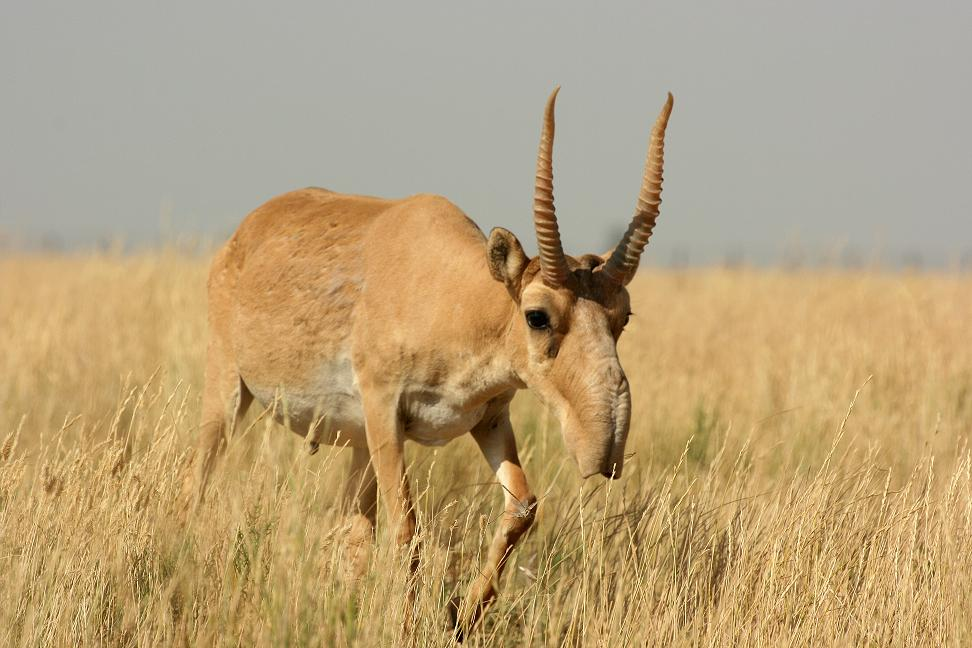
Zimbrul (Bison bonasus) este o specie de bizon care se găsește în Europa.
În România, zimbrii pot fi admirați în Rezervația Dragoș-Vodă de la Vânători Neamț,
în Rezervația Neagra de la Bucșani, Dâmbovița (cea mai mare rezervație din România ca număr
de exemplare), în rezervația Valea zimbrilor din Vama Buzăului, Brașov, la Hațeg - Slivuț,
la Grădina Zoologică din Târgoviște, două exemplare la Grădina Zoologică din Reșița, două exemplare
la Grădina Zoologică din Bârlad și două exemplare la Grădina Zoologică din
Hunedoara. Zimbrii au fost re-introduși în România în anul 1958, când primele două exemplare
de animale au fost aduse din Polonia și ținute într-o rezervație din Hațeg.Ideea zimbrilor
în libertate, pe teritoriul României, s-a născut abia în 1999, printr-un program susținut de
Banca Mondială și Uniunea Europeană.
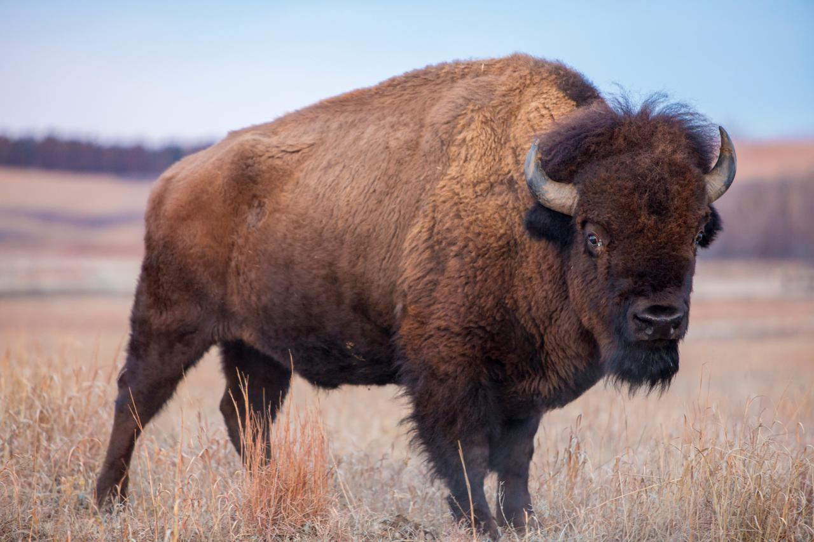
Hoitarul alb sau vulturul egiptean (Neophron percnopterus) este o specie de vultur cu o
arie de răspândire destul de largă: sud-vestul Europei, în nordul Africii, dar puține exemplare
se mai găsesc și în sudul Asiei.
Exemplarele adulte măsoară din vârful ciocului până în extermitatea cozii 85 cm.Deschiderea
aripilor are de obicei 1,7m dar au fost exemplare care au depășit această măsură. Poate cântări
2,1 kg. Penajul este alb dar prezintă câteva pete în zona cozii dar și a aripilor.Penele se tocesc
repede și înainte de năpârlire culoarea penelor tocite este mai degrabă bej decât albă. Uneori el
își "vopsește" penele cu un praf care conține oxid de fier și astfel penele sale capătă o nuanță
însemnată de galben. Din această cauză localnicii îi mai spun și vulturul murdar. Trăiește pe langa
carierele de piatră și prin zonele cu mult praf căutând cadavre(hoituri). Pielea feței este nudă,
aspră și galbenă. Doar în perioada de reproducere pielea de pe față la mascul se colorează în
portocaliu.
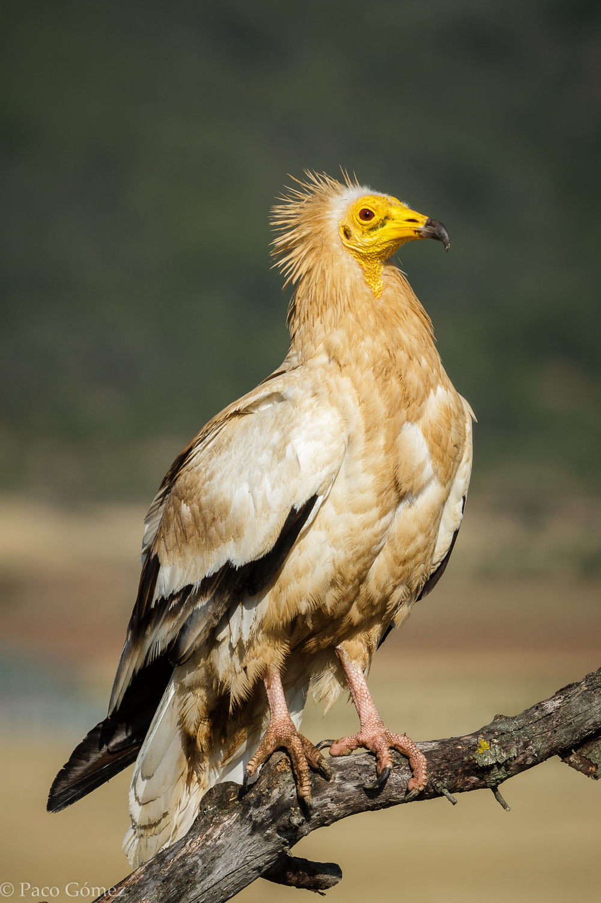
Gâsca cu gât roșu (Branta ruficollis), numită și gâsca cu piept roșu, gâsca cu cravată, este o
gâscă mai mică decât gârlițele cu penajul cel mai frumos colorat întâlnit în Europa, care cuibărește
în tundra siberiană și iernează mai ales în sud-estul Europei (România și Bulgaria, uneori în
Republica Moldova). Este o pasăre-simbol pentru Dobrogea.
Cea mai mare parte a populației mondiale (circa 90%) iernează în România și Bulgaria. În iernile
mai blânde, rămâne pentru a ierna în număr mai mare în Ucraina, iar în iernile mai aspre coboară
spre sud, până în Grecia. În România se pot observa în timpul pasajelor 8.000-17.000 de exemplare și
iernează 9.000-20.000 de exemplare, mai ales în zonele umede din sudul Deltei Dunării, deplasându-se
pe câmpurile cu grâne de toamnă.
Este o specie vegetariană. Hrana în locurile de cuibărit este formată din specii vegetale aflate
în tundra siberiană (iarbă, frunze sau semințe). În cartierele de iernă din sud-estul Europei se
hrănește în timpul zilei pe culturile agricole, la început cu boabele de porumb care au rămas
risipite după recoltare, iar mai apoi cu grâu de toamnă (uneori și cu rapiță). Înnoptează pe lacuri,
iar când acestea îngheață, se așază și pe mare. Atunci când distanța între locurile de înnoptare și
cele de hrănire depășește 30 km, preferă să caute alte locuri de hrănire și înnoptare, de obicei mai
în sud, mai ales când culturile de cereale sunt acoperite de zăpadă.
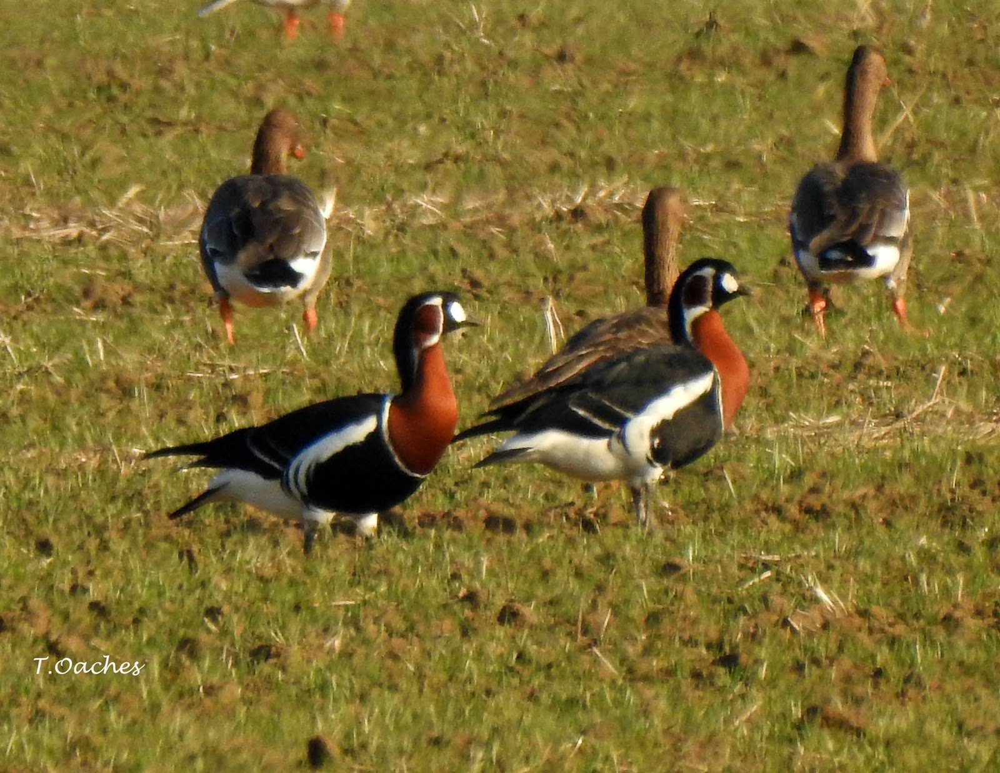
Morunul este cel mai mare dintre sturionii noștri și cel mai mare pește din apele dulci ale
Europei și României, putând atinge o lungime de 5-7 m și chiar mai mult (s-au citat și moruni de
9 m lungime) și o greutate de 1500-2000 kg. Morunii din Marea Neagră au o lungimea obișnuită de
1-3 m și o greutate obișnuită de 100-150 kg, dar au fost pescuite și exemplare mult mai mari de
500-900 kg. Cel mai mare exemplar raportat din Dunăre, pescuit în 1890 la Sfântul Gheorghe, cântărea
888 kg, dintre care 600 kg carne, 127 kg icre, 143 kg cântărea capul, iar 18 kg intestinele și vezica
înotătoare. La 75 de ani, morunul măsoară 4,2 m și cântărește peste 1.000 kg. Un morun, pescuit în
Marea de Azov și cântărind 640 kg, avea 58 de ani.
Are corpul alungit fusiform, masiv și gros. Capul relativ mic. Botul (rostrul) la exemplarele
tinere este triunghiular, ascuțit la vârf. La exemplarele bătrâne, botul este moale, scurt, turtit
de sus în jos, curbat ușor în sus, cu vârful ascuțit, aproximativ conic. Gura mare și foarte largă,
în formă de semilună transversală, ocupă aproape întreaga suprafață inferioară a capului, deschiderea
ei ajunge până la marginile capului, dar spre deosebire de kaluga, nu trece pe partea laterală a
capului. Spre deosebire de alte specii de sturioni gura deschisă este îndreptată spre față. Buza
superioară este întreagă, continuă, pe când cea inferioară are o întrerupere largă la mijloc. Pe
partea ventrală a botului se află 4 mustăți lungi, ovale sau turtite lateral, cu capetele franjurate.
Pe parte posterioară a lor au anexe foliacee (asemănătoare cu o frunză). Mustățile depășesc buza
superioară și ajung până la gură. Coada este heterocercă. Pedunculul caudal nu este turtit lateral.
Ambele membrane branhiale se concresc între ele, în regiunea jugulară, făcând o cută (pliu) liberă
deasupra sistemului branhial și sunt neatașate de istm.
Corpul este acoperit cu cinci rânduri de scuturi osoase longitudinale: un rând dorsal, două
laterale, două ventrale. Numărul lor este următor: 11-14 scuturi dorsale, 41-52 scuturi laterale,
9-12 scuturi ventrale. Înotătoarea dorsală lipsită de spini are 62-73 raze moi. Înotătoarea anală
are 28-41 raze moi și este lipsită de spini. Spini branhiali 24. La exemplarele tinere pielea
corpului este acoperită cu scuturi osoase, proeminente. La exemplarele bătrâne scuturile sunt
îngropate în piele și devin din ce în ce mai șterse, astfel că suprafața corpului apare aproape
goală.Spatele este cenușiu, abdomenul alb. Exemplarele prinse în mare au o culoare mult mai închise,
uneori chiar negre; iar cele din Dunăre, dimpotrivă, sunt cenușii deschis. Se întâlnește și o
varietate complet albă (albinos).
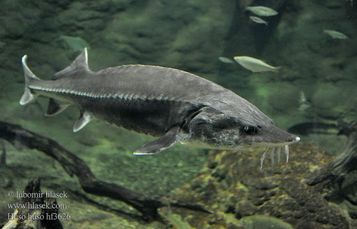
Balaurul sau balaurul dobrogean, șarpele cu patru dungi răsăritean, balaurul mare
(Elaphe sauromates, cu o denumire mai veche Elaphe quatuorlineata sauromates) este un șarpe
neveninos din familia colubride (Colubridae), care trăiește în stepă, deseori în apropierea
locuințelor omenești, chiar în podurile caselor unde vânează porumbei.
Este răspândit în sud-estul Europei (Albania, sudul-estul României, Republica Moldova, sud-estul
Bulgariei, nord-estul Greciei, sudul Ucrainei, Turcia europeană), Asia Mică, sud-vestul Rusiei,
Caucaz, sud-vestul Kazahstanului, nord-vestul Turkmenistanului și vestul Iranului. În România este
o specie protejată și a fost găsit în județele Galați, Tulcea, Constanța, Buzău. Are o talie mare,
de până la 2,60 m, fiind unul dintre cei mai mari șerpi din România.
Evită soarele puternic. Se cațără bine în arbori și se mișcă relativ lent. Când este prins mușcă.
Se hrănește cu mamifere rozătoare, unele șopârle, păsări, inclusiv ouă. Prada este mai întâi omorâtă
prin constricție și apoi înghițită. Vânează de dimineață până la apusul soarelui.
Balaurul dobrogean este un șarpe de talie mare atingând o lungime totală a corpului de până la 2
m, fiind unul dintre cei mai mari șerpi din România. Kirițescu (1930) citează însă un exemplar de
2,60 m capturat de Dombrovsky în 1901 la Cernavodă, pe care l-a studiat personal. Această relatare
împrumută oarecare realitate numeroaselor legende locale despre șerpi uriași întâlniți de localnici.
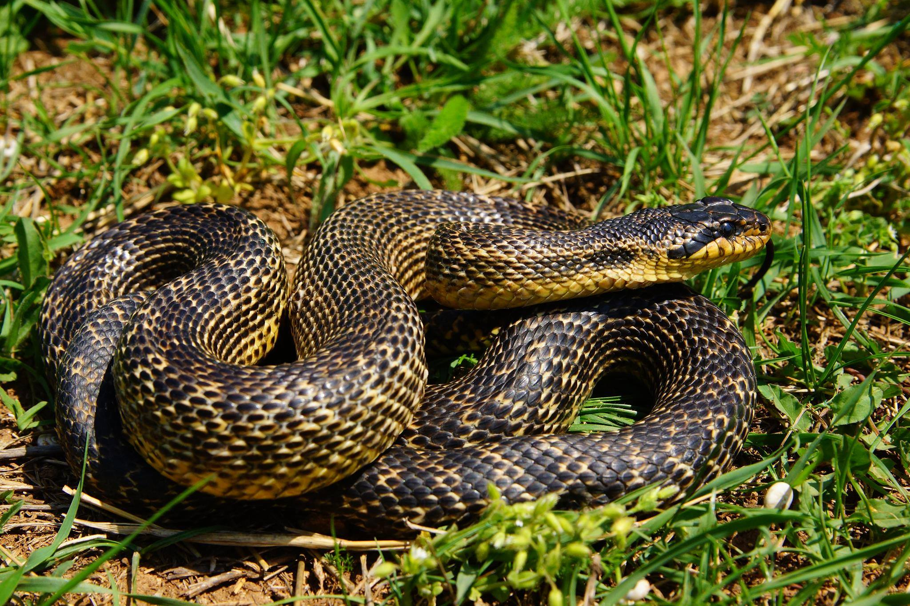
Râsul trăiește într-un areal foarte variat și vast. Apare de-a lungul lanțurilor muntoase din
sud-estul și centrul Europei, dar și din nordul sau estul continetului, până în pădurile boreale
ale Rusiei, apoi Centrul Asiei și platoul Tibetan.
Râsul este al treilea mare prădător al Europei, după urs și lup. Are un trunchi scurt, picioare
lungi și labe foarte bine dezvoltate, cu care alearga foarte eficient prin zăpadă. Celebrele smocuri
din vârfurile urechilor îi conferă aspectul său atât de cunoscut. Felina are văzul și auzul extrem
de fine, fiind capabilă să detecteze o pradă mică în zăpadă de la peste zeci de metri distanță.
Râsul trăiește și vânează solitar, pe teritorii pe care nu tolerează nici un alt animal adult, mai
ales de același sex. Teritoriul lui variază în funcție de sursele de hrană și de densitatea
populației de râși în arealul respectiv. Adulții masculi se țin la distanță unii de ceilalți prin
marcarea teritoriului. Partenerii sexuali sau mama cu puii comunică printr-un mieunat melodic care
străbate distanțe lungi.
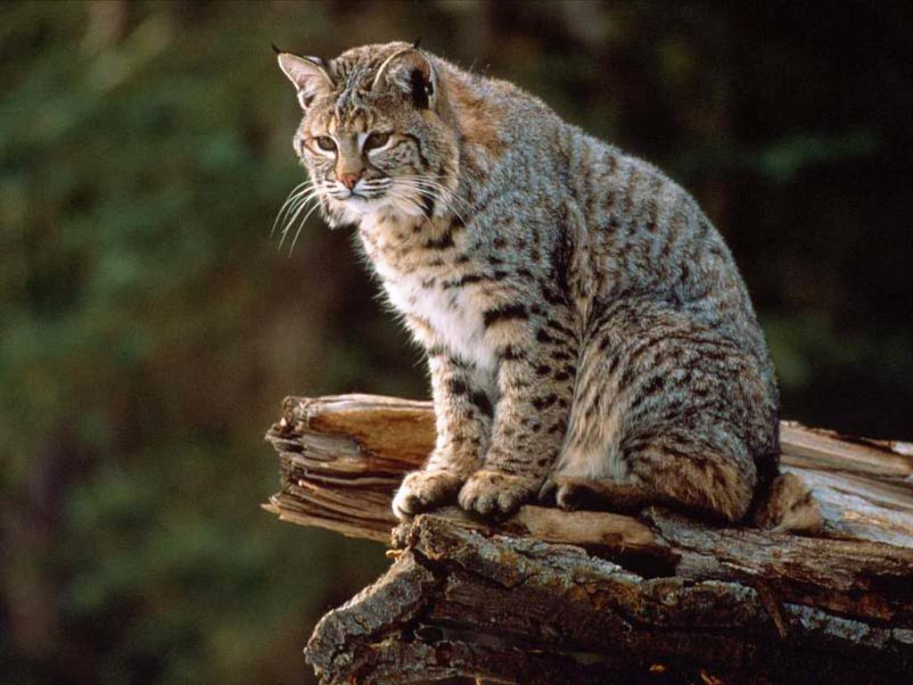
Dihorul (Mustela putorius) este un carnivor de mici dimensiuni aparținând familiei Mustelidelor,
răspândit în majoritatea Europei, nordul Africii și Asia occidentală. Dihorul a fost îmblânzit încă
din timpuri străvechi, aproximativ acum 2500 ani, pentru vânătoarea de iepuri de câmp.
România are singurele populații de dihori din Uniunea Europeană, iar specia trăiește exclusiv în
zonele aride și de stepă. Mai sunt aproximativ 500 de indivizi, în Dobrogea. Specie periclitată, pe
lista roșie din România, dihorul-pătat este protejat din 1993, însă se cunosc extrem de puține
lucruri despre ecologia și statutul său în țara noastră; este inclus și în Anexa III a Directivei
Habitate
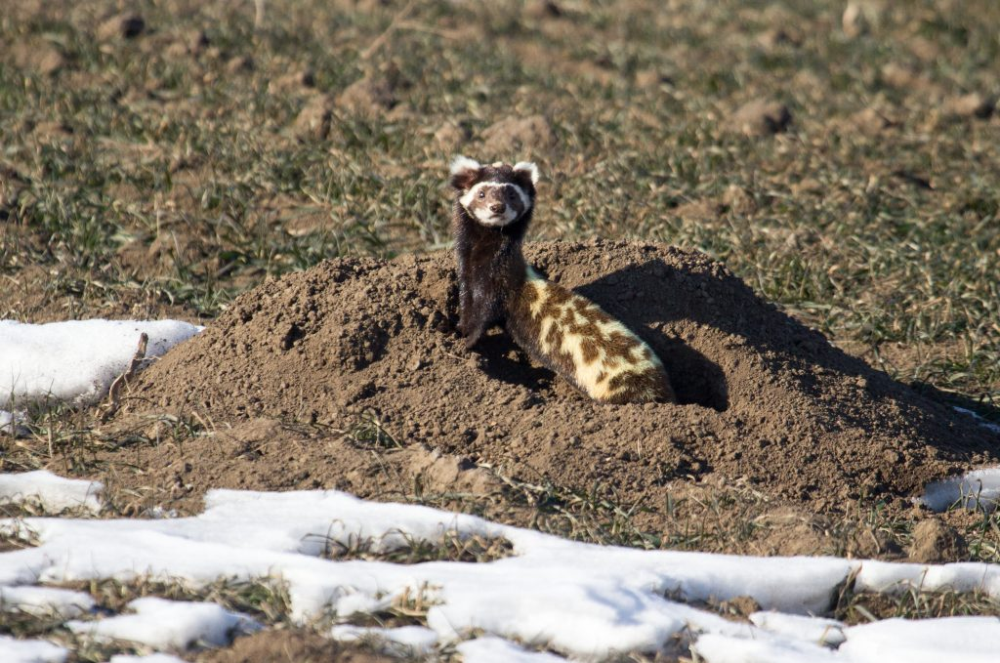
Hamsterul dobrogean (Mesocricetus newtoni) cunoscut și sub numele de hamsterul românesc este o
specie de rozătoare din familia Cricetidae. Este găsit în România și Bulgaria.Arealul de răspândire
al hamsterului românesc nu este cunoscut cu exactitate dar se presupune că nu depășește 50.000 km
pătrați în Dobrogea și nord-estul Bulgariei. Hamsterul românesc trăiește în zona de câmpie pe
terenuri uscate și pietroase cu vegetație puțină dar și în culturi de legume, livezi sau vii.
S-a estimat că ar exista în jur de 3.000 de exemplare de hamsteri românești în libertate ceea ce îl
clasifică drept aproape amenințat.
Hamsterul românesc este o specie nocturnă și crepusculară de rozătoare. Trăiește în mod solitar
într-o rețea complexă de vizuini. Mănâncă semințe, legume furate de către ei, ierburi, dar și
insecte. Își transportă mâncarea cu ajutorul fălcii sale elastice care îl ajută să o depoziteze.
Ating maturitatea sexuală în timp de 56-70 de zile și se înmulțesc între lunile aprilie și august.
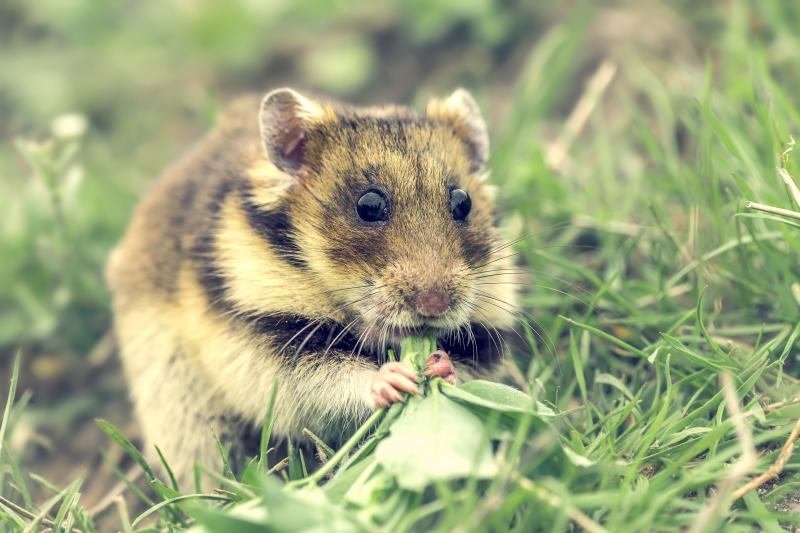
Nurca europeană, Mustela lutreola este un animal din familia Mustelidae ce trăiște în unele
regiuni din Spania, Franța, România, Ucraina, Estonia și Rusia. În trecut trăia în regiuni din
întreaga Europă. Este similară la înfățișare cu nurca americană.
Nurca europeană este o specie în pericol de dispariție.
Nurca europeană are blana în totalitate maro, cu excepția buzelor. Se hrănește cu viețuitoare
acvatice, dar și cu păsări și mamifere mici.
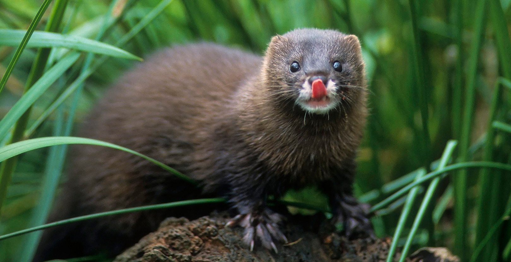
Tigrul (Panthera tigris) este o specie de mamifere carnivore din familia felidelor, fiind una
dintre cele patru specii ale genului Panthera. Este cel mai mare reprezentant al subfamiliei
Pantherinae și unul dintre cei mai mari răpitori tereștri (după ursul polar și cel brun).
Dimensiunile unui tigru siberian la vârsta de 6 luni sunt comparabile cu cele ale unui leopard adult.
Tigrilor le sunt caracteristice dungile de culoare închisă, amplasarea cărora variază de la un
individ la altul. Corpul este adaptat pentru vânătoare, fiind dotat cu colți lungi și maxilare
puternice, vedere nocturnă de șase ori mai bună decât a omului și musculatură dezvoltată, fiind
capabil să sară la o înălțime de până la doi metri cu 50 kg de carne în dinți.Tigrii se hrănesc
îndeosebi cu copitate, dar pot vâna și maimuțe, păsări, pești și chiar alte răpitoare, ca lupii,
leoparzii și crocodilii. Au un comportament solitar și veghează în singurătate teritorii de până
la 1.000 km²; acestea pot cuprinde diferite landșafturi: la sud păduri tropicale și savane, iar la
nord semideșerturi și taiga.
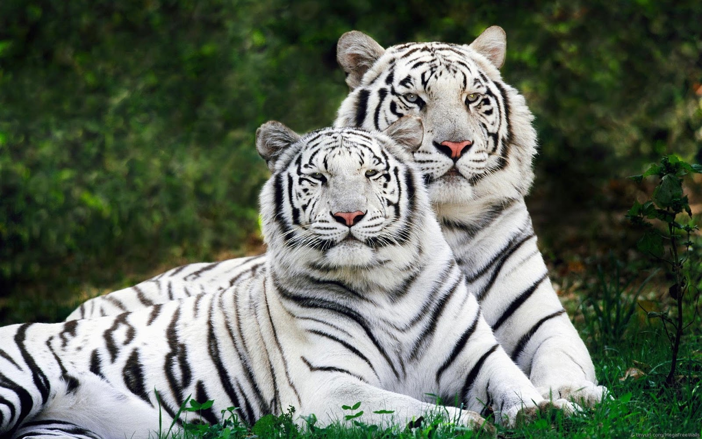
Leopardul zăpezilor (Panthera uncia) este un mamifer prădător mare din familia felidelor, care
trăiește în regiunile muntoase din Asia Centrală, și anume în Afganistan, zona lacului Baikal și
în estul podișului Tibet. Clasificarea speciei a variat de-a lungul timpului, ea fiind inițial
atribuită genului Panthera, împreună cu alte feline mari, pentru ca mai apoi să fie reclasificată
într-un gen aparte, Uncia, iar în 2008 înapoi în Panthera.
Aspectul fizic al leopardului zăpezilor se caracterizează printr-un corp lung, slab și flexibil,
labe relativ mici, un cap nu de dimensiuni modeste și o coadă foarte lungă. Împreună cu coada el
atinge o lungime de 200–230 cm și o greutate de până la 55 kg. Blana este de culoare cenușie-deschis,
cu pete în formă de inel.
Din cauza habitatului său greu accesibil și a densității foarte scăzute, multe aspecte biologice
legate de leopardul zăpezilor sunt slab studiate. La momentul actual, situația ecologică a speciei
este critică. În secolul al XX-lea, aceasta a fost introdusă în Lista roșie a IUCN și în documentele
de acest gen a unor țări. Din 2012 vânătoarea leoparzilor zăpezilor este interzisă.
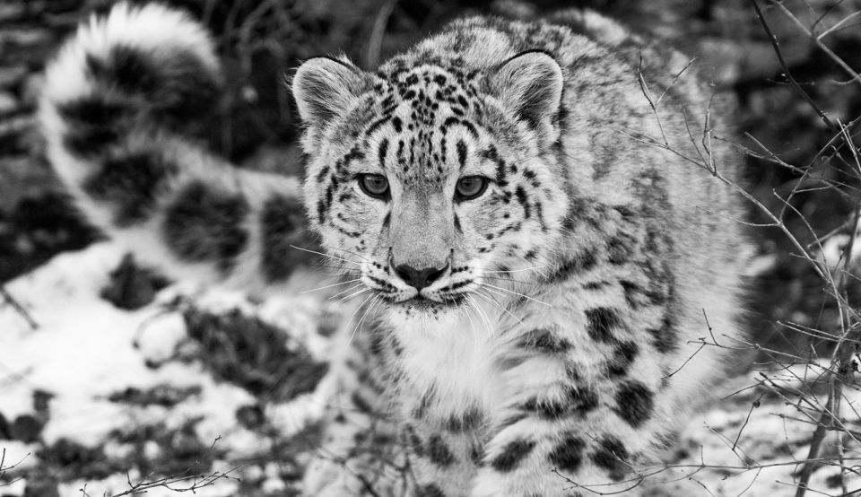
Panda mare (Ailuropoda melanoleuca), colocvial numit ursul panda, este o specie de urși nativă
în sudul Chinei centrale.Deși aparține de ordinul Carnivora, panda mare se hrănește la 99% cu
bambus.În sălbăticie ocazional mănâncă și alte ierburi, și părți ale unor plante, sau chiar
carne sub formă de păsări, rozătoare, sau leșuri. În captivitate ei mai primesc miere, ouă, pește,
igname, frunze de arbuști, portocale sau banane, dar și mâncare special preparată.
În puținele populații cu efectiv redus, ce trăiesc în pădurile montane ale Chinei Centrale, urșii
panda sunt printre cele mai rare mamifere de pe glob.Urșii panda ajung în lungime până la 1,5 m și
aproximativ 1.75 m în înălțime. Masculii sunt cu 10-20% mai mari decât femelele. Masculii cântăresc
până la 150 kg, iar femelele până la 125 kg.Panda este una dintre speciile de urși care au cea mai
lungă coadă, care ar putea ajunge până la 5–6 cm lungime.Urșii panda trăiesc până la 25-30 de ani.
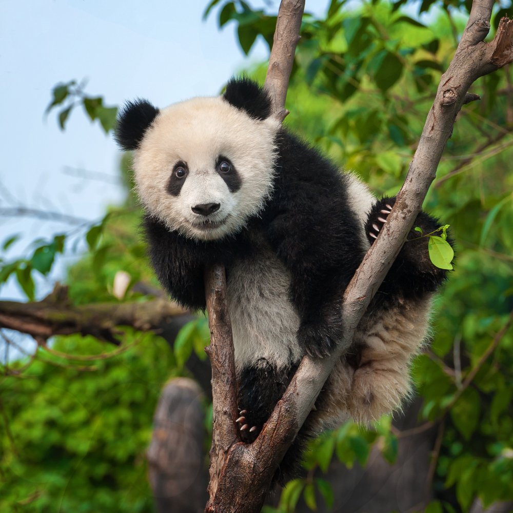
Rechinii înger sunt un grup de rechini din genul Squatina din familia Squatinidae, care au un
aspect oarecum neobișnuit, cu corpuri aplatizate și aripioare largi pectorale, care le dau o
asemănare puternică cu pisicile de mare. Acest gen este singurul din familia sa și ordinul
Squatiniformes. Ei apar în întreaga lume în mările temperate și tropicale. Cele mai multe specii
trăiesc în mări adânci temperate sau tropicale, dar câteva specii locuiesc în apă mai adâncă, până
la 1.300 metri (4.300 ft).Rechinii înger sunt uneori numiți „pești-călugăr”, deși acest nume se
aplică și membrilor genului Lophius.
În timp ce partea din față a corpului rechinului înger este largă și aplatizată, partea din
spate păstrează un aspect muscular mai tipic pentru alți rechini. Ochii și spiracolele sunt pe
partea de sus și cele cinci branhii sunt pe spate. Atât pectoralele cât și aripioarele pelvine sunt
mari și ținute orizontal. Există două aripioare dorsale, nicio fină anală și neobișnuit pentru
rechini, lobul inferior al aripioarei caudale este mai lung decât lobul superior. Cele mai multe
tipuri cresc până la o lungime de 1,5 m (5 ft), cu rechinul inger japonez , cunoscut pentru a ajunge
la 2 m.În timp ce ele pot crește foarte mari, unii rechini îngeri dezvoltă anomalii ale
coloanei vertebrale care includ scolioza.
Balena albastră (Balaenoptera musculus) este un mamifer marin din subordinul balenelor cu fanoane
(Mysticeti).Cu o lungime de 30 m și cu o masă corporală de peste 170 tone, este cel mai
mare animal cunoscut că ar fi existat vreodată.
Până la începutul secolului al XX-lea balenele albastre erau abundente în aproape toate oceanele de pe
Pământ. Vânătorii de balene le-au vânat timp de peste o sută de ani până au ajuns aproape de
dispariție, și au fost protejate de comunitatea internațională în 1966. Un raport din 2002 estima
că mai există între 5.000 și 12.000 de balene albastre în toată lumea,aflate în cel puțin cinci
grupuri. Cercetări mai recente asupra subspeciei pigmeu sugerează că cifrele sunt o subestimare.
Înainte de epoca vânătorii, cele mai mari populații se găseau în Antarctica și numărau circa
239.000 indivizi (între 202.000 și 311.000).Mai există două concentrații mult mai mici
(de circa 2.000) în grupurile din Pacificul de Nord, Antarctica și Oceanul Indian. Alte două
grupuri există în Atlanticul de Nord și cel puțin două în emisfera sudică.
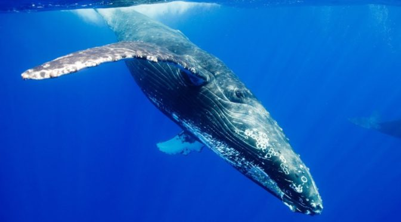
Lamantinul este un mamifer mare acvatic cunoscut câteodată sub numele vacă de mare
(un nume care este folosit și pentru morsă, un animal diferit). Lamantinul este erbivor.
Lamantinul este un mamifer mare, cu o lungime a corpului de până la 3,5 m și o greutate de peste
o tonă. Sunt animale acvatice, erbivore. Coada lor are o formă ovală.
Din cauza taliei sale masive și greutății sale, lamantinul nu are prădători naturali.Lamantinii
trăiesc pe coasta oceanelor din Americi și în Marea Caraibelor.
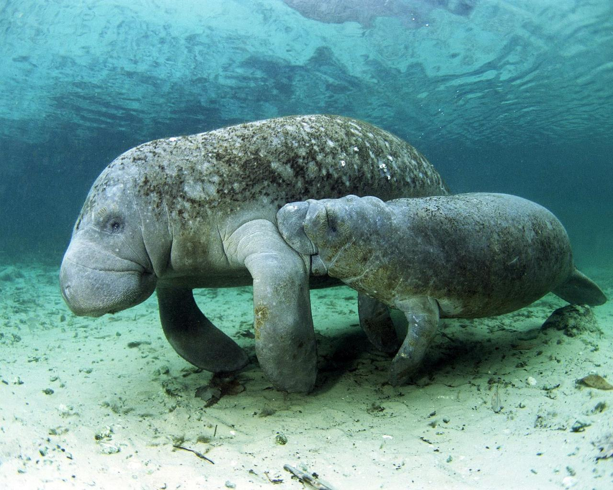
Gorilele (lat. Gorilla) sunt mamifere extante în pădurile tropicale ale Africii Centrale.
Împart cu oamenii 98-99% din ADN și sunt verii noștri cei mai apropiați după bonobo și cimpanzei.
În prezent sunt cele mai mari primate. Trăiesc în păduri tropicale și sunt în general erbivore.
Trăiesc la diverse altitudini, gorilele de munte (Gorilla beringei beringei) trăind în Riftul
Albertin între 2225 și 4267 m. Gorilele orientale (Gorilla gorilla) trăiesc în păduri dese și
mlaștini chiar până la nivelul mării.
Gorilele se deplasează susținându-și greutatea în pumni, deși acestea adoptă o poziție bipedă
pe distanțe scurte când cară mâncare sau în poziții defensive. Masculii ajung la 165–175 centimetri,
și cântăresc 140–200 kg iar femelele ajung la 147 centimetri și 100 kg.
Ursul polar (Ursus maritimus) este un urs alb care trăiește în zonele nordice înghețate ale
Oceanului Arctic, fiind cel mai mare animal de pradă întâlnit pe uscat. Durata vieții sale este de
35-40 de ani.
Ursul polar este un mamifer mare, greutatea acestuia ajungând până la 300–600 kg la masculi și
150–300 kg la femele, înălțimea la 1,8 m și lungimea la 2,5 m. Are o blană de culoare albă.
Ghearele mari și puternice sunt capabile să doboare adversarii naturali. Are un strat de grăsime
alba sub piele, care îl ajută să se protejeze împotriva frigului, această caracteristică fiind
întâlnită și la alte animale din tundră. Este un înotător excelent.
Culoarea blănii este albă, dar poate fi gălbuie sau gri în timpul verii. Însă explicația
științifică a culorii acesteia este că firele de păr, incolore, sunt goale în interior ca fibrele
optice și conduc razele ultraviolete spre pielea lor neagră, unde sunt absorbite. Este foarte
călduroasă, iar temperatura corpului rămâne neschimbată atunci când este foarte frig. Sistemul
lor de încălzire este foarte eficient (în părul blănii se găsesc canalicule microscopice pline
cu aer care asigură o izolare termică excelentă) și de aceea uneori se tăvălesc prin zăpadă pentru
a se răcori.
Rinocerii (familia Rhinocerotidae) reprezintă o familie de mamifere imparicopitate. În prezent,
există doar cinci specii supraviețuitoare ale acestei familii. Două dintre aceste specii sunt native
Africii și trei Asiei de sud. Trei din cele cinci specii — rinocerul javanez, rinocerul de Sumatra
și rinocerul negru — sunt amenințate critic. Rinocerul indian este amenințat, în sălbăticie existând
mai puțin de 2.500 de indivizi. Rinocerul alb este clasificat ca vulnerabil, cu aproximativ 14.500
de indivizi în sălbăticie.
Africa de Sud adăpostește încă cele mai mari populații de rinoceri din întreaga lume, cu o cifră
de aproximativ 20.000 exemplare, reprezentând 70-80% din populația mondială de rinoceri africani.
Motivul intensificării braconajului constă în creșterea cererii de coarne de rinocer pe piața neagră
din Asia de Sud-Est.Mai nou, chinezii insistă asupra unor așa-zise proprietăți anti-cancer ale
coarnelor de rinocer, cu toate că nu există niciun studiu științific medical care să confirme acest
zvon.
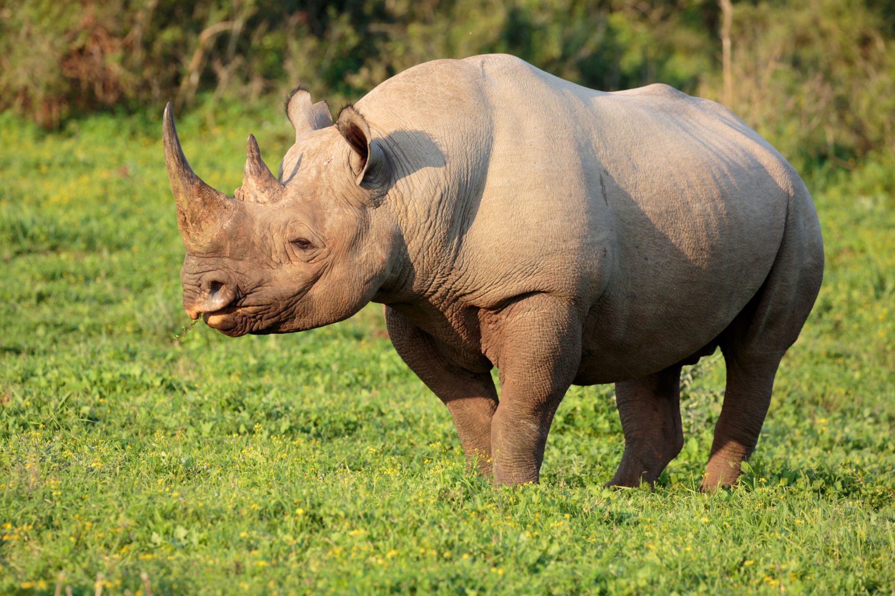
Omul ar trebui să conştientizeze impactul major pe care îl au activităţile sale asupra florei şi
faunei prin distrugerea habitatelor, reducerea cantităţii de hrană şi să ia măsuri urgente de diminuare
a poluării, în vederea refacerii populaţiilor aflate în declin.
Principalele cauze ale dispariţiei speciilor de plante şi animale sunt: distrugerea habitatelor,
exploatarea comercială (colectarea de plante, vânatul iraţional şi braconajul), distrugerile produse
de către speciile aclimatizate şi poluarea.O altă cauză majoră ce duce la declinul dramatic al speciilor
de plante şi animale este poluarea mediului.
Dezvoltarea tot mai mare a activităţilor industriale şi extinderea agriculturii au făcut ca diferite chimicale toxice să se răspândească tot mai mult în circuitul hranei în cadrul ecosistemelor.
Poluarea apei, temperaturile ridicate ale apei şi creşterea acidităţii mărilor şi oceanelor au făcut să dispară numeroase specii de peşti.
In secolul XX, aciditatea aerului şi ploaia acidă au ajuns sa fie recunoscute ca o ameninţare capitală la adresa calităţiii mediului.
Ploile acide au distrus, până la sfârşitul sec.XX, 118 milioane m3 de păduri în Europa. De asemenea,
deversările chimice au afectat pentru mult timp şi fundul oceanic, organismele acvatice avand mult de
suferit în urma inconştienţei şi nepăsării oamenilor.